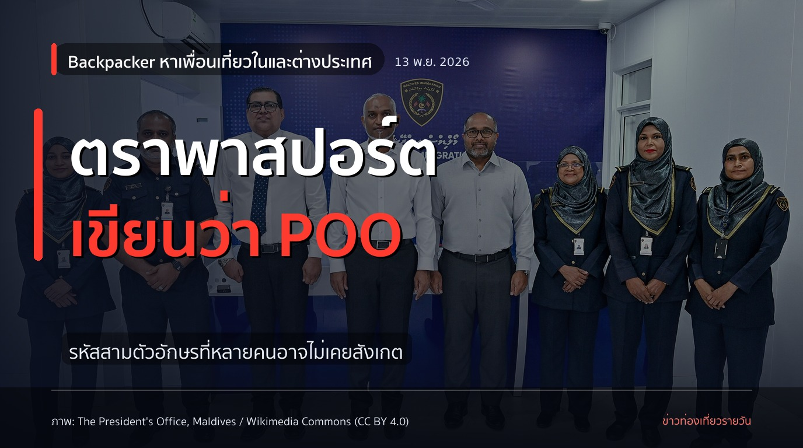
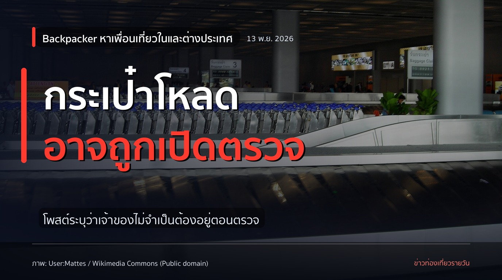
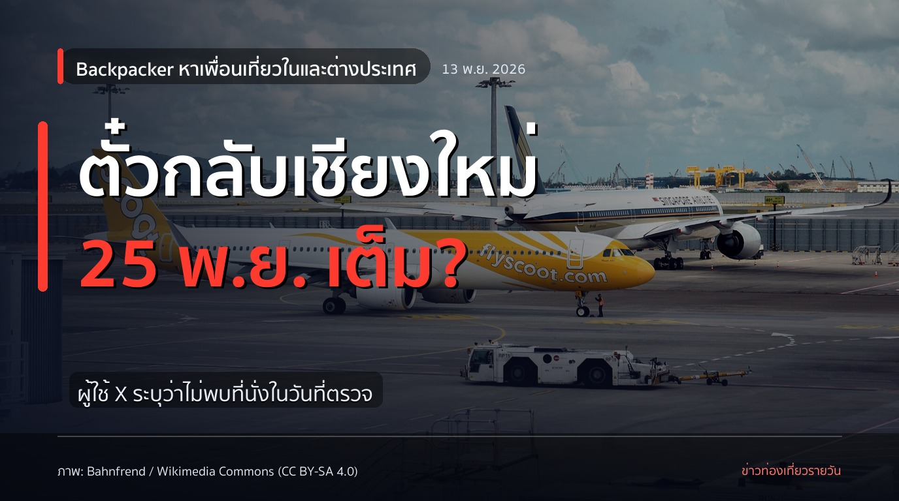
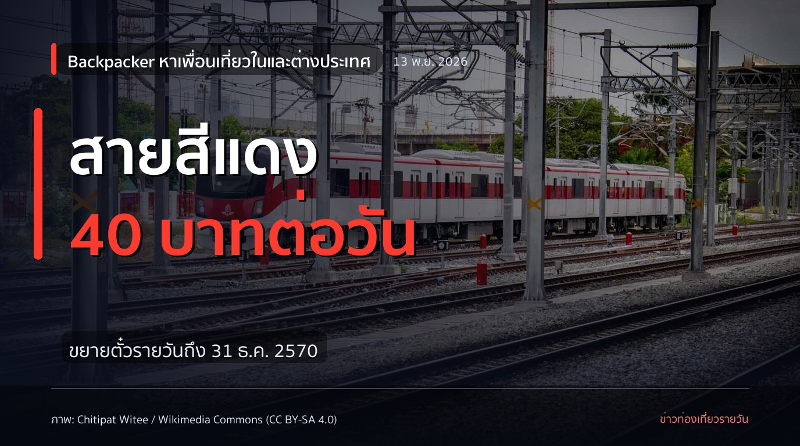

1. สุวรรณภูมิขอโทษ หลังเหตุผู้โดยสารจีน 22 คนกระทบเที่ยวบินไปปักกิ่ง

สุวรรณภูมิขอโทษ หลังเหตุผู้โดยสารจีน 22 คน
สนามบินสุวรรณภูมิออกมาขอโทษ หลังเหตุเผชิญหน้าระหว่างเจ้าหน้าที่รักษาความปลอดภัยกับผู้โดยสารชาวจีนกลุ่มหนึ่งกลายเป็นเรื่องที่ถูกแชร์บนโซเชียล กลุ่มนี้มี 22 คน และเที่ยวบินไปปักกิ่งเกิดความล่าช้า
รายละเอียดที่เผยแพร่ยังไม่พอจะสรุปว่าใครเป็นฝ่ายผิด แต่สำหรับคนที่อยู่ในเที่ยวบินเดียวกัน ความล่าช้ากระทบแผนเดินทางได้ทันที หากเจอเหตุแบบนี้ที่สนามบิน ควรติดตามประกาศของสายการบินและเก็บข้อมูลเที่ยวบินไว้ให้ครบ
คุณเคยเจอเหตุวุ่นวายที่ทำให้เที่ยวบินล่าช้าไหม? ที่มา: https://x.com/ThaiEnquirer/status/2084665986737947102
สุวรรณภูมิ #เที่ยวบินล่าช้า #ข่าวสายการบิน
ภาพ: David McKelvey from Brisbane, Australia / Wikimedia Commons (CC BY 2.0)
2. ตราประทับพาสปอร์ตมีคำว่า POO หลายพันเล่ม

พาสปอร์ตหลายพันเล่มมีตราประทับคำว่า POO
เรื่องนี้ชวนสะดุดตา เพราะบทความระบุว่าเป็นตราประทับที่รัฐบาลสหรัฐฯ ใช้จริง โดยตราเข้าประเทศมักมีรหัสสนามบินสามตัวอักษรอยู่ด้วย หลายคนอาจเคยเห็นตราในเล่มผ่าน ๆ แต่ไม่เคยสังเกตตัวอักษรเล็ก ๆ บนนั้น
ถ้ามีพาสปอร์ตเล่มเก่าที่เก็บไว้ ลองเปิดดูตราประทับจากทริปที่ผ่านมา อาจเจอรหัสสนามบินที่จำได้ หรือคำที่อ่านแล้วต้องหยุดมองอีกที
คุณเคยเจอตราประทับพาสปอร์ตที่ทำให้อมยิ้มไหม? ที่มา: https://www.paddleyourownkanoo.com/2026/11/13/thousands-of-passports-have-been-stamped-with-poo-and-you-might-not-have-realized-heres-how-to-check/
พาสปอร์ต #เรื่องเที่ยว #สนามบิน
ภาพ: The President's Office, Maldives / Wikimedia Commons (CC BY 4.0)
3. โพสต์เตือนสนามบินไทยเปิดกระเป๋าโหลดตรวจได้โดยเจ้าของไม่อยู่

โพสต์เตือนเรื่องกระเป๋าโหลดที่สนามบินไทย ตั้งแต่ 16 ต.ค.
ผู้ใช้ X รายหนึ่งระบุว่า สนามบินไทยสามารถเปิดตรวจสัมภาระที่โหลดใต้เครื่องได้ในกรณีที่เห็นว่าจำเป็น แม้เจ้าของกระเป๋าไม่ได้อยู่ด้วย และจะมีเอกสารใส่ไว้ในกระเป๋าที่ผ่านการตรวจ
นี่เป็นข้อมูลจากโพสต์ที่แชร์ต่อกัน ผู้เดินทางควรเช็กข้อกำหนดล่าสุดกับสนามบินหรือสายการบินก่อนออกเดินทาง หากรับกระเป๋าแล้วพบเอกสารดังกล่าว ให้เก็บไว้พร้อมตรวจสภาพสัมภาระของตัวเอง
คุณเคยได้รับกระเป๋าโหลดที่มีเอกสารแจ้งการตรวจอยู่ข้างในไหม? ที่มา: https://x.com/sabaai825/status/2113479416072544595
สนามบินไทย #กระเป๋าโหลด #เตรียมตัวบิน
ภาพ: User:Mattes / Wikimedia Commons (Public domain)
4. มีผู้โพสต์ว่าตั๋วเชียงใหม่–กรุงเทพฯ วันที่ 25 พ.ย. เต็มทุกเที่ยวบิน

เชียงใหม่–กรุงเทพฯ วันที่ 25 พ.ย. มีคนโพสต์ว่าตั๋วเต็ม
ผู้ใช้ X รายหนึ่งระบุว่า หลังคืนลอยกระทง ตั๋วเครื่องบินจากเชียงใหม่กลับกรุงเทพฯ ในวันที่ 25 พ.ย. ไม่เหลือที่นั่งบนเว็บไซต์ของสายการบินที่ตรวจดู แม้ไทยเวียดเจ็ตและแอร์เอเชียจะมีหลายเที่ยวบินในวันนั้น
นี่เป็นสถานะที่ผู้โพสต์พบในขณะตรวจ ไม่ใช่การยืนยันว่าทุกเที่ยวบินจะเต็มตลอดเวลา ใครต้องกลับวันดังกล่าวควรเช็กที่นั่งกับสายการบินโดยตรง และดูแผนเดินทางสำรองก่อนจองที่พักหรือกิจกรรมเพิ่ม
คุณเคยหาตั๋วกลับหลังเทศกาลแล้วเจอเที่ยวบินเต็มไหม? ที่มา: https://x.com/RonallChersan/status/2120727982558044660
เชียงใหม่ #ตั๋วเครื่องบิน #ลอยกระทง
ภาพ: Bahnfrend / Wikimedia Commons (CC BY-SA 4.0)
5. สายสีแดงขยายตั๋วรายวัน 40 บาทถึงสิ้นปี 2570

สายสีแดง 40 บาทต่อวัน ขยายถึงสิ้นปี 2570
บอร์ดการรถไฟแห่งประเทศไทยเห็นชอบขยายตั๋วเหมาจ่ายรายวันของรถไฟฟ้าชานเมืองสายสีแดง บุคคลทั่วไปจ่าย 40 บาท ส่วนนักเรียนและนักศึกษาจ่าย 30 บาท มาตรการที่ขยายนี้ครอบคลุมตั้งแต่ 1 ธ.ค. 2569 ถึง 31 ธ.ค. 2570
ใครมีแผนใช้สายสีแดงหลายเที่ยวในวันเดียว ลองเทียบค่าเดินทางกับตั๋วรายวันก่อนซื้อ โดยเฉพาะวันที่ต้องต่อรถไปทำธุระหลายจุดในกรุงเทพฯ
คุณใช้สายสีแดงบ่อยแค่ไหน และตั๋วรายวันคุ้มกับการเดินทางของคุณหรือเปล่า? ที่มา: https://www.khaosod.co.th/economics/news_10471411
รถไฟฟ้าสายสีแดง #ค่าเดินทาง #เที่ยวกรุงเทพ
ภาพ: Chitipat Witee / Wikimedia Commons (CC BY-SA 4.0)
6. ไทยไลอ้อนแอร์ลดสูงสุด 20% จองถึง 22 พ.ย.
ไทยไลอ้อนแอร์ลดสูงสุด 20% จองถึง 22 พ.ย.
ผู้ใช้ X แชร์โปรโมชันครบรอบ 13 ปีของสายการบิน สำหรับบัตรโดยสารแบบไลอ้อนเซฟเวอร์ ทั้งเส้นทางในประเทศและระหว่างประเทศ ระบุช่วงจอง 12–22 พ.ย. 2569 และช่วงเดินทาง 12 พ.ย. 2569 ถึง 31 มี.ค. 2570
ส่วนลดที่ระบุเป็นตัวเลขสูงสุด ไม่ใช่ราคาที่ทุกเที่ยวบินจะได้เท่ากัน ก่อนกดจ่าย ลองเลือกวันที่ต้องการเดินทางแล้วตรวจราคาสุดท้ายของเที่ยวบินนั้นบนช่องทางจอง
คุณมีเส้นทางไหนที่กำลังรอดูราคาตั๋วอยู่? ที่มา: https://x.com/SP_5703/status/2121221311469158858
ไทยไลอ้อนแอร์ #โปรตั๋วเครื่องบิน #ตั๋วเครื่องบิน
ภาพ: kitmasterbloke / Wikimedia Commons (CC BY 2.0)